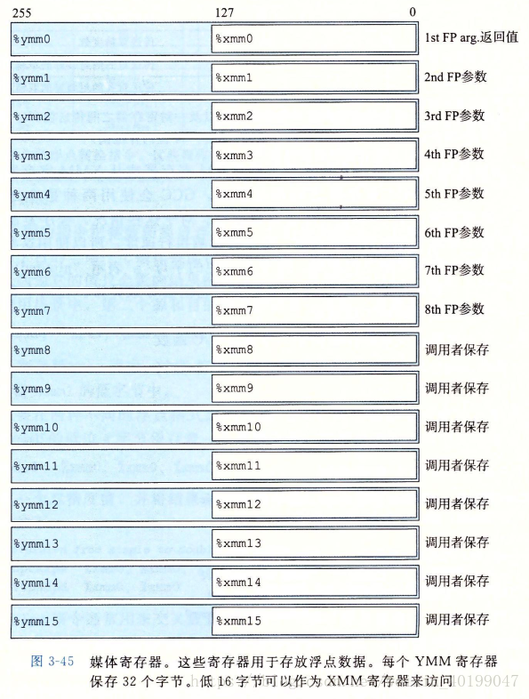

读书内容
程序的机器表示 章节 3.8~3.12
3.8 数组访问与分配
数组定义
数组是某种基本数据类型数据的集合 对于数据类型 T 和整型常数 N，数组的声明如下：
T A[N]
上面的 A 称为数组名称。它有两个效果： ①、它在存储器中分配一个 L*N 字节的连续区域，这里 L 是数据类型 T 的大小（单位为字节） ②、A 作为指向数组开头的指针，如果分配的连续区域的起始地址为 xa，那么这个指针的值就是xa
即当用 A[i] 去读取数组元素的时候，其实我们访问的是 xa+i*sizeof(T)。sizeof(T)是获得数据类型T的占用内存大小，以字节为单位，比如如果T为int，那么sizeof(int)就是4。因为数组的下标是从0开始的，当 i等于0时，我们访问的地址就是 xa
package main
import "fmt"
func test1() {
a := [10]int{}
for i := 0; i < 10; i++ {
fmt.Println(i, &a[i])
}
}
运行结果：
0 0xc0000e4000
1 0xc0000e4008
2 0xc0000e4010
3 0xc0000e4018
4 0xc0000e4020
5 0xc0000e4028
6 0xc0000e4030
7 0xc0000e4038
8 0xc0000e4040
9 0xc0000e4048
数组嵌套
package main
import "fmt"
func test2() {
a := [5][5]int{}
for i := 0; i < 5; i++ {
for j := 0; j < 5; j++ {
fmt.Println(i, j, &a[i][j])
}
}
}
运行结果：
0 0 0xc0000e4000
0 1 0xc0000e4008
0 2 0xc0000e4010
0 3 0xc0000e4018
0 4 0xc0000e4020
1 0 0xc0000e4028
1 1 0xc0000e4030
1 2 0xc0000e4038
1 3 0xc0000e4040
1 4 0xc0000e4048
2 0 0xc0000e4050
2 1 0xc0000e4058
2 2 0xc0000e4060
2 3 0xc0000e4068
2 4 0xc0000e4070
3 0 0xc0000e4078
3 1 0xc0000e4080
3 2 0xc0000e4088
3 3 0xc0000e4090
3 4 0xc0000e4098
4 0 0xc0000e40a0
4 1 0xc0000e40a8
4 2 0xc0000e40b0
4 3 0xc0000e40b8
4 4 0xc0000e40c0
3.9 异质的数据结构
- 结构（structure），用关键词struct来声明，将多个对象集合到一个单位中
- 联合（union），用关键词union来声明，允许用几种不同的类型来引用一个对象
const (
N = 16
)
type fix_matrix [N][N]int
type People struct {
Name string
Sex string
Age int
Address string
}
type Student struct {
People
Attribute int
}
3.10 在机器级程序中将控制与数据结合起来
- 指针是C语言的一个核心特色，它提供了一种统一方式，对不同数据结构中的元素产生引用。
- 每个指针都对应一个类型，void *类型代表通用指针，它通过强制或隐式类型转换变成一个有类型的指针。
- 每个指针都有一个值，NULL(0)值表示指针没有指向任何地方。
- 指针用&操作符创建。
- *操作符用于间接引用指针。
- 数组与指针紧密联系。
- 将指针从一种类型强制转换为另一种类型，只改变它的类型而不改变它的值，效果只是改变指针- 运算的伸缩。
- 指针也可以指向函数。
package main
import "net/http"
type starInt *int
type handler *func(http.ResponseWriter, *http.Request)
3.11 浮点代码
处理器的浮点体系结构包括多个方面，会影响对浮点数据操作的程序如何被映射到机器上，包括： 1） 如何存储和访问浮点数据。通常是通过某种寄存器方式来完成。 2） 对浮点数据操作的指令。 3） 想函数传递浮点数参数和从函数返回浮点数结构的规则。 4） 函数调用过程保持寄存器的规则——例如，一些寄存器被指定为调用者保存，而其他的被指定为被调用者保存。

package main
func float_mov(v1 float32, src, dest *float32) float32 {
v2 := *src
dest = &v1
return v2
}
把浮点值转换成整数时，指令会执行截断（truncation）